AI PRODUCT DAILY / 2026-11-01
改邮件、圈论文，让机器人接着听
Godwit把改写接到正确发件账户，Papilot把PDF批注变成可逐项审阅的修改；从掌托敲击到机器人临场改指令，看交互细节如何影响下一步操作。
2026年11月1日 · 早间刊
进入今日方向与目录 → Mo作者提供的实际产品界面。 ↗ 原始图证
Mo作者提供的实际产品界面。 ↗ 原始图证AI PRODUCT DAILY / 2026-11-01截止 04:04:23 Toronto / 09:04:23 UTC
今天值得看的操作细节
修改落到具体对象发件账户、文件清单、论文段落都有各自上下文；确认界面应显示这次会改什么。
[S06] [S01]边执行边接收补充用户中途改口，机器人需要停下原动作；视频缺少关键信息时，追问比继续猜更有用。
[S63] [S140]工具调用需要清楚的边界原型把请求、权限、执行和结果分开记录；可调用工具，并不等于可以跳过用户确认。
[S111] AI PRODUCT DAILY / 2026-11-01产品 · PH发现 · 2026-10-29 · 本周回看
Mo先展示文件移动方案，把口述任务变成可批准的卡片
Mo作者提供的实际产品界面。 ↗ 原始图证Mo是住在Mac屏幕边缘的助手，用户打字或说话，让它整理下载、合并PDF、规划日程或起草邮件。
任务返回带按钮的卡片，长任务显示步骤与Stop；移动文件先预览，发信前再确认。
可把口述要求存成定时、解锁、文件夹变化或来信触发的例程，保存前仍逐项检查。
支持本地模型与自带云端密钥；屏幕记忆默认关闭，开启后保留本机加密文字六十天。要求macOS十五或以上；苹果智能另有系统与设备要求，自带密钥的服务费用不含在应用购买中。
产品判断
10月29日已有首版；10月31日是PH发现。撤销记录有帮助，但厂商的全可撤销说法尚未实测。
AI PRODUCT DAILY / 2026-11-01开源产品 · 修复 · 2026-11-01T07:34:22Z · 窗口内观察
Godwit让改写跟随发件账户，中文标点也不再拖进链接
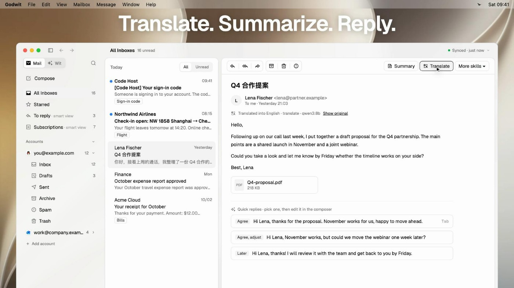
开发者提供的邮件翻译、摘要与改写界面；非本次实测 ↗ 原始图证Godwit是支持IMAP/SMTP的桌面邮箱，Wit可读邮件、附件并起草回复；1.23.0修补多账户写作细节。
在草稿里选语气或圈选文字改写，模型现在同时收到该发件账户的姓名、地址和写作说明。
明确改写要求优先于账户风格；中文逗号后的文字不再并入裸网址，附件显示系统文件类型图标。
用户选择本地或云端模型；草稿发出前仍须批准，外部代理接口只读邮件与建草稿。同一技能可跨账户复用，但用户仍须检查称谓与落款，不能把模型提示当作发送前校验。
产品判断
维护者跑过自动测试，但没有用真实模型验证签名抑制，也未在运行界面检查链接修复。
AI PRODUCT DAILY / 2026-11-01开源 · 版本更新 · 2026-10-31T03:11:00Z · 近三日 / 边界见深读
Papilot让人在PDF上批注，审完改动再选写回原稿或独立分支
 v0.7.0官方中文文档展示的排版PDF修改前后审阅界面，含接受、拒绝和评论操作；示例稿件，不是独立实测。 ↗ 原始图证
v0.7.0官方中文文档展示的排版PDF修改前后审阅界面，含接受、拒绝和评论操作；示例稿件，不是独立实测。 ↗ 原始图证Papilot给修改LaTeX论文的人一个PDF工作台，直接对排版后的句子和公式提出修改。
用户选择文字或框出区域、写下批注；SyncTeX对应源码位置，代理修改后重新排版，逐项显示前后差异供接受、拒绝或评论。
十月三十一日的0.7版可按颜色组织批注；新任务接受的修改先留在任务中，审完再写回工作目录或提交独立分支。
本地运行仍需Git、完整TeX环境和已登录代理；软件免费开源，模型调用沿用用户自己的服务与费用。已有任务沿用原交付行为。
产品判断
源码差异转成可读版面，方便发现公式和编号变化，但数学正确性与文献依据仍要作者负责检查。
AI PRODUCT DAILY / 2026-11-01产品 · 传感器交互 · 2026-10-27 · 本周回看
Knucklebop用MacBook运动传感器识别敲击，按当前应用执行快捷动作
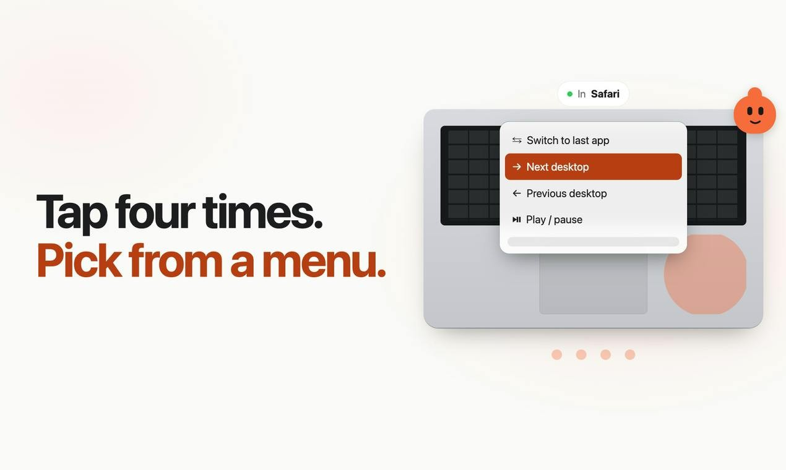
开发者动作菜单示意，展示敲击触发；非硬件实拍或独立实测 ↗ 原始图证Knucklebop让Apple Silicon MacBook用户轻敲掌托或旁边桌面，完成会议静音、播放与切换窗口。
先校准力度，再把两到六次敲击绑定动作；网站规则优先于应用规则，最后才使用全局规则。
它读取加速度计与陀螺仪，不靠麦克风听声；Test模式显示会触发什么但不真正执行。
键盘和触控板操作附近的敲击被忽略，锁屏不执行；传感器靠未公开系统接口，更新可能影响可用性。闭盖及敲击屏幕上沿不受支持；官网提供七天试用，先确认常用会议应用与桌面环境是否适配。
产品判断
首版10月27日，31日PH出现；没有独立误触率数据，先用自己的桌面与敲击习惯验证。
AI PRODUCT DAILY / 2026-11-01产品 · 早期访问更新 · 2026-10-31 · 近三日 / 边界见深读
Nemini把小应用和待检查清单放进聊天，测验先藏住答案
 Nemini作者提供的实际产品界面。 ↗ 原始图证
Nemini作者提供的实际产品界面。 ↗ 原始图证Nemini是带记忆与独立沙盒电脑的AI伙伴服务，0.3.2在10月31日增加聊天里的小应用与共享待办。
用户描述计数器、倒计时或小游戏，伙伴在对话中生成可继续使用的界面，下一次保留进度。
完成的共享任务交回用户检查；习惯、花销和心情可用图表表达，记忆测验在作答前隐藏答案。
前一天已加入聊天历史导入；长期记忆涉及原对话、摘要与文件，不等于只保存屏幕里几条消息。旧聊天导入时可标明说话者；人物记忆不等于经过核验的资料库，复习答案仍需对应原文。
产品判断
服务仍处早期访问，功能说明来自厂商；状态保存、题目正确性和任务完成质量没有独立实测。
AI PRODUCT DAILY / 2026-11-01产品 · 桌面更新 · 2026-10-29 · 本周回看
Dotverse修复角色间回复归属，让恢复消息保留人工分配
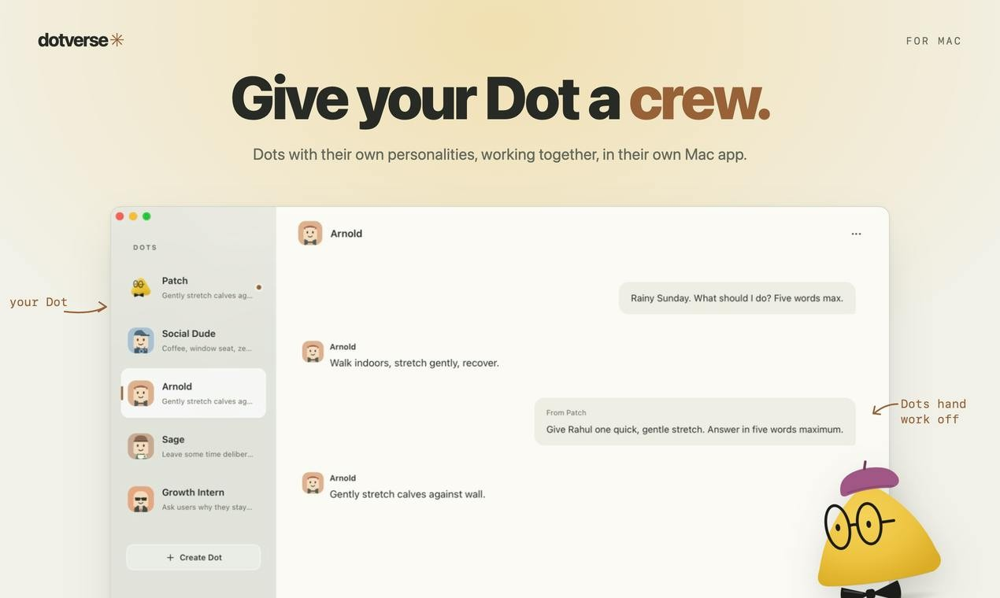
开发者提供的Mac应用截图：左侧切换角色，右侧显示交接对话；非OpenAI官方产品或本次实测 ↗ 原始图证Dotverse是把已有Dot放进Mac桌面、按任务建立多个角色的独立应用；十月二十九日的零点二点一版修复回复归属。
用户给角色发消息，系统附带路由；缺少归属的回复回到主要Dot，恢复后仍保留文字和附件。
手动分配不被覆盖，移动回复保留原位置，并清理过时的思考与等待状态。
角色共用底层记忆且请求顺序执行，本地删除不会清掉连接服务中的记忆。应用要求Apple Silicon Mac、现有Dot和联网，部分输入会打开连接服务窗口。
产品判断
这是具体的交互可靠性更新，没有独立实测；发布日期仅到天，保守列近七日补充。角色名称不等于记忆隔离。
AI PRODUCT DAILY / 2026-11-01产品 · Reddit作者说明 · 2026-10-31 · 近三日 / 边界见深读
MoveMate为低频搬家任务调整付费，AI清单仍需人工核对
开发者App Store清单截图；不代表迁居事项已代办 ↗ 原始图证MoveMate把搬家日期、路线和家庭情况转成任务清单，适合和伴侣共同安排迁居准备。
用户选择搬家目的，填写是否带孩子、宠物或汽车；标准事项先成表，AI再补个性化任务，用户能加备注并修改日期。
作者宣布十月三十一日起降低高级版价格，回应搬家只偶尔发生、按长期习惯收费不合适的疑问。
商店列出不续费的三十天体验通行证和订阅；免费清单离线，高级同步和AI处理涉及云端数据。
产品判断
原帖只读到一条独立回复及作者回应，没有成交数据；降价不能证明用户愿意付费，生成事项也不是正式办事指引。
AI PRODUCT DAILY / 2026-11-01产品 · 官方预告 · 2026-10-31 · 近三日 / 边界见深读
国行Apple智能公布测试日期，千问接入仍由用户选择
 Apple官方信息实时翻译界面 ↗ 原始图证
Apple官方信息实时翻译界面 ↗ 原始图证国行Apple智能面向兼容iPhone，把翻译、照片整理与写作放进已有应用。
用户可翻译信息、查看通话字幕、描述要找的照片，也可让写作工具处理选中文字，减少复制到另一应用的步骤。
十月三十一日公布十一月四日开发者测试、十二月随iOS27.3推出的计划；这是预告，尚非正式可用。
千问可选接入Siri、写作工具与视觉智能，需要登录千问或通过Apple登录；其他平台仍待审批。兼容机型、设备与Siri语言都要核对，千问扩展也不等于独立千问应用的全部功能。
产品判断
首批不含新一代Siri AI；系统内入口减少切换，但照片、文档与生成答案仍需逐项判断。
AI PRODUCT DAILY / 2026-11-01产品更新｜官方修复记录与帮助文档 · 2026-10-29 · 本周回看
Google Home修正错房间音量与静音计时器，把设备用电读数放回控制页
 Google提供的Home应用首页界面示意；用于说明控制入口，不代表新增能耗控件已在这张图中展示。 ↗ 原始图证
Google提供的Home应用首页界面示意；用于说明控制入口，不代表新增能耗控件已在这张图中展示。 ↗ 原始图证Google Home十月二十九日更新针对家中跨房间控制：人对身边音箱说话，要改变的却可能是另一台设备。
音乐转移更容易理解；找不到目标音箱时误改当前音量的问题获修复，没人讲话却突然回答也列入修复。
特定计时器和闹钟被设成零音量的错误改为匹配设备音量；睡眠播放计时与普通计时也更清楚区分。
安卓上的兼容Matter插座和监测器显示功率及累计用电，前提是设备本身提供相应测量数据。可在设备控制界面查看。
产品判断
这是既有系统的修复和界面增量，不是新传感器发布；功能分批推出，最新应用也不保证全部立即出现。
AI PRODUCT DAILY / 2026-11-01产品 · 社区发现 · 2026-10-31 · 近三日 / 边界见深读
NexusDock把多台设备接到一个MCP入口，记忆共享不等于任务自动迁移
 维护者提供的AgentDock多设备查询结果截图，显示示例设备与工具数量；不是NexusDock控制台，也不是本次连接实测。 ↗ 原始图证
维护者提供的AgentDock多设备查询结果截图，显示示例设备与工具数量；不是NexusDock控制台，也不是本次连接实测。 ↗ 原始图证NexusDock给同时使用电脑、服务器与容器的人一个统一入口，把设备上的AgentDock接到支持MCP的助手。
先用一次性配对码接入设备，再把统一地址连接到AI客户端；文件、命令、浏览器与Git操作仍在指定设备执行。
十月三十一日作者在社区介绍多设备管理、共享记忆与流程；这是新发现，不能把已有工具重新算作首次发布。
Recall保存长期知识，Workflow保存可重复步骤；当前任务进度属于设备实例，不会因配对就自动跨设备续跑。
产品判断
免费方案面向单设备；多设备便利仍要承担账户、权限、设备在线与自托管维护，示例截图不是实际连接验证。
AI PRODUCT DAILY / 2026-11-01产品与开发者工具 · 原始发布 · 2026-10-31 · 近三日 / 边界见深读
Desk365把Teams提问接到可修改工单，提交前由员工确认
 官方Teams工单表单，提交者可确认内容后再送交服务台。 ↗ 原始图证
官方Teams工单表单，提交者可确认内容后再送交服务台。 ↗ 原始图证Desk365把服务台AI代理接入Microsoft Teams，员工用自然语言询问公司知识库，不必先切到工单门户。
回答没解决问题时，代理追问并填写主题、描述和表单，员工可换表单、改内容、加附件，再提交给支持团队。
十月三十一日新增Teams渠道及各渠道的自定义工单表单，后续回复、状态、审批和满意度调查继续留在同一聊天。
管理员按邮箱域限制可用联系人，需Plus或Premium计划及已启用的AI功能，Teams也可能需要批准第三方应用。
产品判断
后台的已解决指标按模型信心计算，仍需复核真实解决情况与知识更新，不能直接当作用户确认。知识来源由团队指定，接入渠道后仍需同步和测试。
AI PRODUCT DAILY / 2026-11-01开发者硬件｜厂商公告与规格 · 2026-10-27 · 本周回看
OAK 4 FFC让机器人自己安排五个视角，深度计算留在板上
 Luxonis提供的OAK 4 FFC开发套件产品图，摄像头模组另购。 ↗ 原始图证
Luxonis提供的OAK 4 FFC开发套件产品图，摄像头模组另购。 ↗ 原始图证OAK 4 FFC面向要把相机嵌入机头、无人机或定制外壳的开发者，五个接口共用一块视觉计算板。
先选镜头与安装位置，在OAK Viewer填入间距和方向，再用重叠画面校准，输出同步视频与双目深度。
板上运行模型和视觉管线，可向主机传送检测结果；并非五台各自独立运行的相机，分辨率与帧率要共同分配。
只兼容V2模组，镜头另购；开发套件公告计划十一月发货，裸板计划二〇二七年首季交付。
产品判断
它省下多相机同步与算力拼接，机械安装、散热和无重叠视角的定位仍由开发者完成。数据表还标注原型，最终硬件可能调整。
AI PRODUCT DAILY / 2026-11-01研究演示｜厂商新版公告与旧版论文 · 2026-10-30 · 近三日 / 边界见深读
Ludi 0.2改进手势与中途纠正，机器人动作仍依赖专门工具
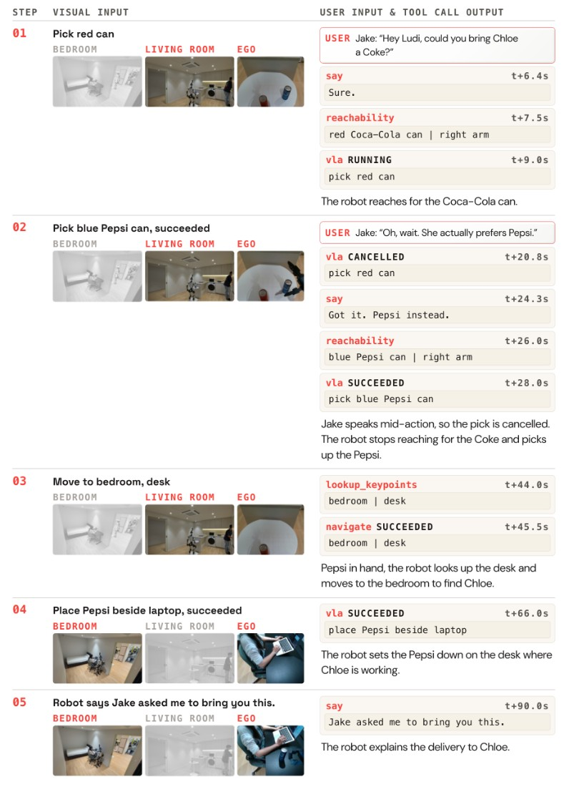
Ludo论文中的Ludi 0.1实机任务序列，展示途中修改饮料请求；作为旧版机制背景，非0.2测试。 ↗ 原始图证Ludo在伯克利展示Ludi 0.2，研究人说到一半改主意、补充手势时，机器人怎样继续协作。
系统把观察、对话与执行结果放进上下文，决定回答、追问或调用移动和抓取；已公开细节主要来自旧版。
新版声称改善手势识别、记忆、社会线索和工具协调，没有披露新的成功率或延迟数据。
旧版允许人在说话或动作过程中补充指令，演示计算运行在现场工作站，不能当成机身独立运行。
产品判断
它针对重复下令的麻烦，但多人指令冲突、停止与恢复仍需要明确行为；本次没有公开购买或使用入口。新版本的现场表现尚无独立复测，不能按家庭产品理解。
AI PRODUCT DAILY / 2026-11-01开发者预览｜厂商接口与硬件文档 · 2026-10-30 · 近三日 / 边界见深读
RoboAPI把腕部画面变成动作序列，机械臂接入仍要校准和验证
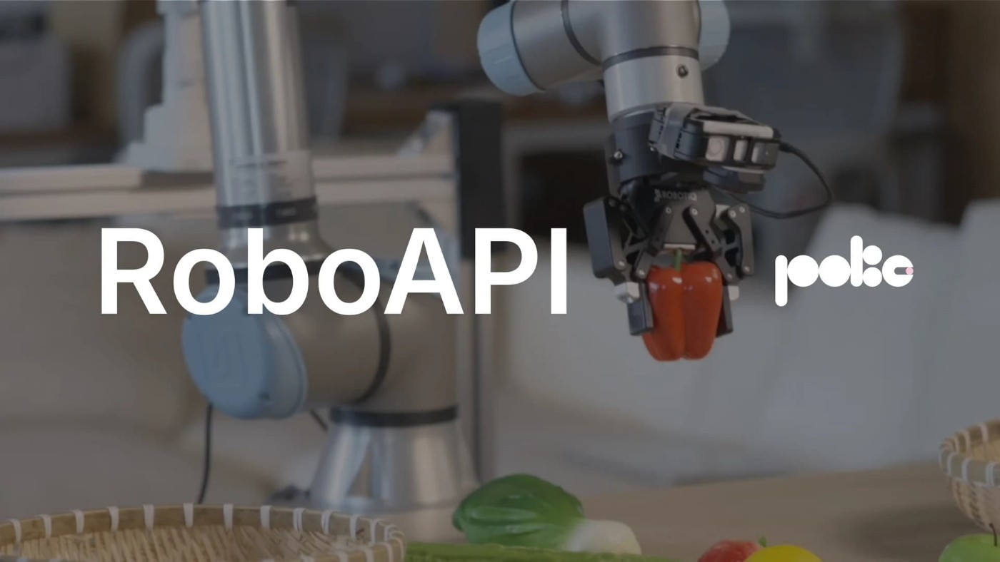
破壳机器人官方RoboAPI演示封面，机械臂夹持红椒；厂商演示，非独立实测。 ↗ 原始图证破壳机器人开放RoboAPI技术预览，让有兼容机械臂的研究者在自己的桌面与物体上试用Poke-Aurora。
输入任务文字、腕部相机图像及机械臂状态，模型返回下一段动作；本地运行时采集新观察并继续执行。
参考配置采用鱼眼运动相机与末端位姿控制，减少换机械臂后重新训练的目标仍需外部实验验证。
预览限非商业用途；开发者要装配、校准并验证控制，返回成功不等于实际任务完成，关闭浏览器也不会停止机器人。
产品判断
遮挡、长指令与重复尝试仍会影响结果；动作边界约束目标位置，不能代替整个机械臂的避障。这也不保证每台设备都能直接照搬演示结果。
AI PRODUCT DAILY / 2026-11-01机器人传感器｜厂商公告与产品规格 · 2026-10-30 · 近三日 / 边界见深读
SR18把向下测距装进小型机器人，十一月底才开始供货
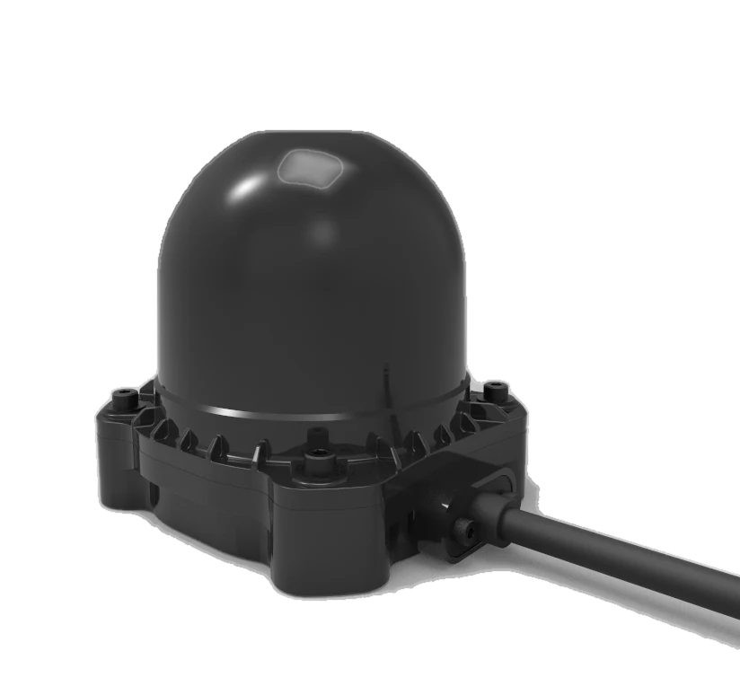
Benewake提供的SR18产品渲染图；公告计划十一月三十日开始全球供货。 ↗ 原始图证SR18面向割草、清洁和配送机器人的开发者，把十八通道激光测距放进一百九十克机身。
激光回波形成周围距离数据，向下通道补充低矮障碍与地形变化，交给机器人自己的感知和控制软件使用。环绕视野不等于所有方向都有完整地面覆盖。
每个发射器配独立探测器，厂商称可减少强反光造成的通道串扰；不是替机器人规划路线。
平均功耗不超过五瓦，支持远程固件更新；十月三十日宣布量产，全球供货计划十一月三十日开始。
产品判断
它缩小传感器占用，安装高度、坡面盲区与避障决策仍需要整机验证。
AI PRODUCT DAILY / 2026-11-01产品与开发者工具 · 原始发布 · 2026-10-31 · 近三日 / 边界见深读
telemetry.dev把提示版本与评测接回同一条代理轨迹
 telemetry.dev作者提供的轨迹界面；图片仍待核验。 ↗ 原始图证
telemetry.dev作者提供的轨迹界面；图片仍待核验。 ↗ 原始图证telemetry.dev面向维护线上代理的人，把模型调用、工具、耗时和成本放在一条轨迹里。
接入SDK或现有OpenTelemetry导出器后，点开失败步骤查错误；新版本提示先在数据集上评测，再调整生产标签。
本次发布新增提示管理、评测、告警及CLI与只读MCP入口；提示可按比例上线，不必重新部署应用。
MCP调用若没有客户端传来的关联标识，服务端不能可靠还原整段对话；工具参数默认不写入跨度。
产品判断
它帮助找出哪一步出错，评测案例和允许暴露的内容仍要由团队选择。测试环境需要单独配置，轨迹采集仍计入额度，测试提示还需自己的模型密钥。
AI PRODUCT DAILY / 2026-11-01开源 · 社区产品变化 · 2026-10-31T19:19:52Z · 窗口内观察
Super Productivity为AI编写的插件指出真实接口
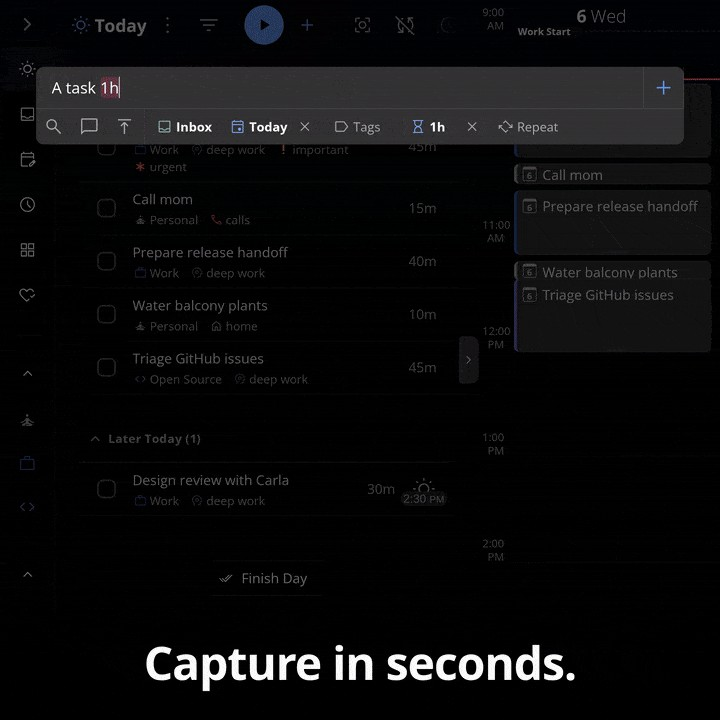
项目提供的任务管理界面演示；不是新诊断提示的截图。 ↗ 原始图证Super Productivity让个人为任务清单和计时器增加按钮、面板与自动化；十月三十一日合并了插件诊断改进。
把生成的JavaScript或HTML装入插件后，若代码读取不存在的方法，运行时会提示相近真实接口及文档位置，帮助作者回到可执行的调用。
提示覆盖主插件和内嵌页面，并区分只能在主插件调用的方法；另修正动作事件的类型与错误示例。
每个错误名称只提醒一次，返回值仍为空值，不替用户自动改代码；旧版客户端仍需核对兼容要求。
产品判断
这是已合并的开发改进，尚不能写成所有安装渠道已更新；它减少排错猜测，不能保证生成插件正确。
AI PRODUCT DAILY / 2026-11-01开源 · 社区产品变化 · 2026-10-31T13:44:28Z · 窗口内观察
Gufo缩短低把握的预测链，并修正分段读入的一致性
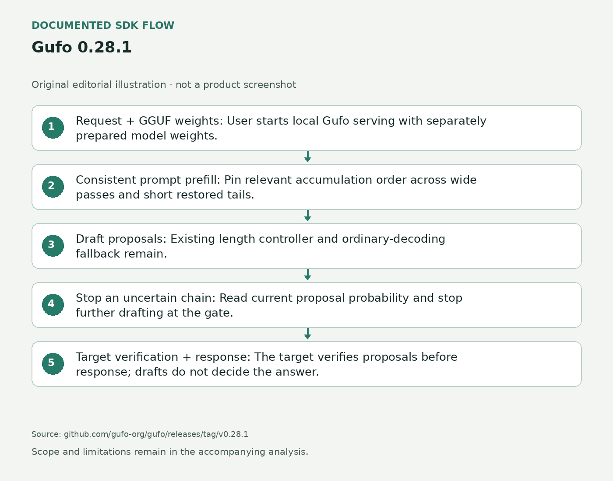
依据原文绘制的机制示意；非产品界面 ↗ 原始图证Gufo面向AMD Strix Halo本地推理，开发者把模型装入服务，再用聊天或兼容接口发送请求。
零点二八点一版让预测器在低把握的草稿处结束本轮，目标模型继续验证；无需把越长的预测链当成越快。
另一处修复让提示在整批读入或缓存恢复后的短段读入时，相关计算使用一致的累加顺序。
维护者测试有长回复加速，也有短回复退步；模型权重另行下载，其许可不随引擎MIT许可统一。
产品判断
它解决特定硬件和模型路径的执行问题，不是新的通用聊天模型；实际等待还取决于请求长度与并发。更换运行环境仍要复核质量。
AI PRODUCT DAILY / 2026-11-01开源 · 社区产品变化 · 2026-10-31 · 近三日 / 边界见深读
KoboldCpp把音乐、声音参考转写和更多语音模型放进本地界面
 README中的较早KoboldCpp加载界面，画面标示v1.98.1；用于说明产品操作环境，不是1.124的新音乐控制界面。 ↗ 原始图证
README中的较早KoboldCpp加载界面，画面标示v1.98.1；用于说明产品操作环境，不是1.124的新音乐控制界面。 ↗ 原始图证KoboldCpp让用户在自己的电脑加载模型，通过浏览器聊天、写作并生成媒体；软件和模型分开下载。
一点一二四版把更多音乐和语音模型接入MusicUI，用户可带入歌词，也可选有语言模型的模板先生成歌词。
新转写标签可用Whisper处理参考音频，帮助准备需要参考文字的语音模型；不同模型的声音克隆和指令能力仍不同。
代理另增MCP设置向导及多行粘贴，主程序的单文件形式不免除权重下载、硬件容量和模型条款。
产品判断
这是本地工具链更新，未独立试听或计时；不能把可加载更多模型等同每台电脑都能流畅运行。参考转写仍需检查。
AI PRODUCT DAILY / 2026-11-01开源实验 · 社区作者发布 · 2026-10-30T12:59:57Z · 近三日 / 边界见深读
Obol把代理费用按答对任务计算，暴露静默失败的升级盲点
 依据原文绘制的机制示意；非产品界面 ↗ 原始图证
依据原文绘制的机制示意；非产品界面 ↗ 原始图证Obol让开发者把同一组数值任务交给几种代理执行方式，对比答对比例和每次成功的估算成本。
输入工具函数、任务及Python算出的标准答案，分别运行逐步调用、一次写程序和由便宜模型向强模型升级的路径。
作者的社区发布指出，程序不报错却算错时，单靠崩溃触发升级看不见问题；手写轨迹检查也未跨场景复用成功。
实验只用两个小型本地模型和玩具数据库，价格为假设表；受限Python解释器明确不是安全沙箱。
产品判断
它提供可复查的实验材料，不承诺真实业务省费；新工具、写入动作和模糊目标仍需另测。
AI PRODUCT DAILY / 2026-11-01产品与开发者工具 · 原始发布 · 2026-10-29 · 本周回看
Droid把多次工具调用写成程序，只把需要的结果交回模型
 依据原始文档绘制的流程示意；非产品截图 ↗ 原始图证
依据原始文档绘制的流程示意；非产品截图 ↗ 原始图证Droid是围绕模型运行的编程代理框架，供开发者处理代码库、工单和持续集成任务。
模型先写JavaScript程序，程序调用已有工具、筛选结果并打印摘要；原始文件和日志留在程序变量与运行记录中。
十月二十九日1.0把程序化工具调用设为所列模型的默认方式，可并行执行互不依赖的调用。
脚本容器自身没有文件或网络权限，但调用的工具仍受真实权限与沙盒配置约束；并行不代表可以绕开审批。
产品判断
减少模型往返有明确机制，厂商对成本和速度的测试仍不能替代自有任务验证。恢复会话时还要重新连接权限回调与外部服务，最终输出也须另行验收。
AI PRODUCT DAILY / 2026-11-01产品与开发者工具 · 原始发布 · 2026-10-31T01:01:35Z · 近三日 / 边界见深读
Claude Code为团队加共享月预算，子代理可单设推理力度
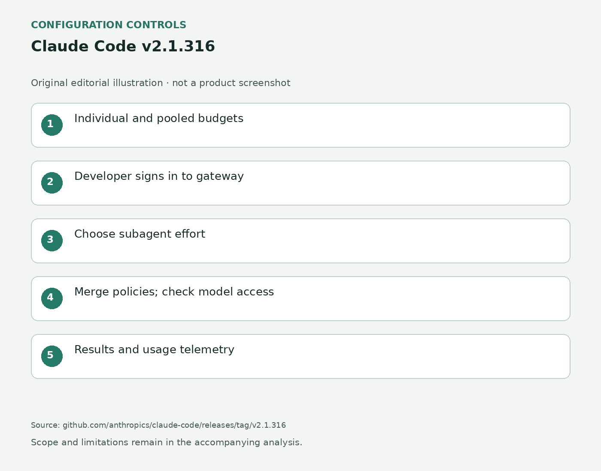
依据原始文档绘制的配置与调用示意，非产品界面 ↗ 原始图证Claude Code这次更新面向运行多个代理的开发团队，网关管理员可以同时管理个人额度与团队共享月预算。
开发者经企业身份登录，任务交给主代理或子代理，网关按团队策略限制模型并记录令牌、模型、身份与延迟。
新版本加入pooled_budget字段和子代理默认推理力度；多条匹配策略也能按层合并，不再只取第一条。
普通组额度仍是每人继承的上限，共享池另加一层；子代理有独立上下文，但请求仍计入同一使用限额。
产品判断
团队需要检查实际生效的设置和计费估算，不能把配置好预算当作云服务账单的精确硬上限。网关配置与托管订阅后台仍是不同入口。
AI PRODUCT DAILY / 2026-11-01开源 · 研究原型 · 2026-10-31 · 近三日 / 边界见深读
DeepSeek把仓库事件分派为独立任务，补充消息不会自动扩大权限
 根据官方领域模型绘制的编辑架构示意；不是产品界面或实测画面。 ↗ 原始图证
根据官方领域模型绘制的编辑架构示意；不是产品界面或实测画面。 ↗ 原始图证DeepSeek的开源研究原型面向单个GitHub仓库，让团队从原有对话交代编程任务。
系统接收GitHub或可选飞书消息，检查发起人和规则，把获准工作交给独立会话与目录，结果再回到原线程。
十月三十一日公开的原型把触发、判断、任务与执行记录分开，避免多人同时派活时都塞进同一段上下文。
面板先显示待人处理的工作，再看系统状态与历史；后续消息可补上下文，却不会自动扩大任务授权。任务结果仍需维护者在原仓库检查。
产品判断
代码不等于完整架构愿景，也不是生产就绪产品；部署者仍须配置账户、权限、运行环境并复核生成的代码。
AI PRODUCT DAILY / 2026-11-01产品与开发者工具 · 原始发布 · 2026-10-30 · 近三日 / 边界见深读
Bedrock宣布GovCloud扩展OpenAI接口，把路由与日志接回现有控制
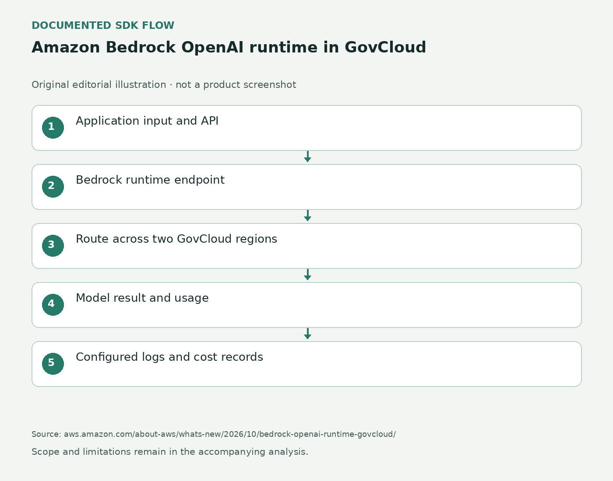
依据原始文档绘制的配置与调用示意，非产品界面 ↗ 原始图证AWS宣布GovCloud中的GPT-5.6 Terra与Luna接入bedrock-runtime，面向已有政府云应用的开发与运维团队。
应用发送Responses、Chat Completions或Converse请求，服务在两个GovCloud区域间调度，再返回结果与用量。
十月三十日增量是接口、跨区推理和账户级记录整合，模型本身七月已发布，并非换了一套新权重。
调用内容日志默认关闭，需要设置同账户同区域的存储目标；不同接口支持的防护与工具能力并不完全相同。
产品判断
公告明确宣布上线，但模型卡还缺GovCloud运行时路由行，具体标识与账号可用性仍需核实，不能凭示例猜测。结构化结果仍需检查拒绝与不完整回复，跨区路由也不替应用设计重试和备用路径。
AI PRODUCT DAILY / 2026-11-01产品与开发者工具 · 原始发布 · 2026-10-30 · 近三日 / 边界见深读
GPT-6 Rosalind把Astra接入获批生命科学工作，研究权限单独审核
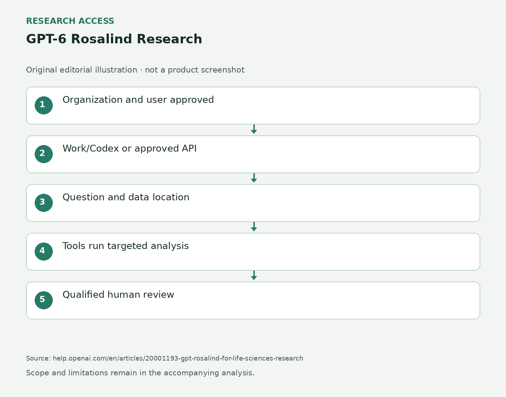
依据原始文档绘制的流程示意；非产品截图 ↗ 原始图证GPT-6 Rosalind Research面向获批生命科学机构，在Work、Codex和单独获批的API组织开放。
研究者给出问题并指向文件、数据库或批准的存储，模型通过工具选择分析步骤、读取结果并整理可重复流程。
十月三十日开放使用GPT-6 Astra相同权重的研究配置，没有为此新增训练或后训练。
Discovery许可不自动升级Research；企业先有两周默认关闭的管理员预览，API仅供授权内部研究。
产品判断
入口和治理规则是明确增量，输出进入实验或发表前仍要求合格人员审核。大数据应通过获准工具读取，工作区资格不覆盖其他接口组织，也不会自动启用零数据保留。模型回答也不是实验验证。
AI PRODUCT DAILY / 2026-11-01研究 · 作者实验 · 2026-10-30 · 近三日 / 边界见深读
ScheduleGen让多臂示范先避让再并行，少量动作扩成训练数据
 ScheduleGen作者图1：接触技能、连接运动和多臂排程；包含作者仿真场景。 ↗ 原始图证
ScheduleGen作者图1：接触技能、连接运动和多臂排程；包含作者仿真场景。 ↗ 原始图证ScheduleGen面向训练双臂、四臂和人形机器人操作策略的研究者，把少量示范扩成仿真训练数据。
先标出抓取、倾倒等技能及先后关系，系统按新物体位置调整动作，规划连接路径，再安排各臂等待或同时运动。每次换初始布局都会重新规划，避免照搬固定停顿。
联合排程检查机械臂与抓持物的碰撞，保留成功回放。作者在二十八种仿真变体上报告平均策略成功率65.5%。
真实YAM双臂实验每种变体二十次，成功率50%至80%；相机、机器人和物体几何需先校准。
产品判断
避碰约束属于数据生成过程，不能当作学到的策略在任意现场都安全的保证。
AI PRODUCT DAILY / 2026-11-01研究 · 作者实验 · 2026-10-30 · 近三日 / 边界见深读
RoboWorld让代理在仿真里焊接、倒液体，二十五项测试均未完成
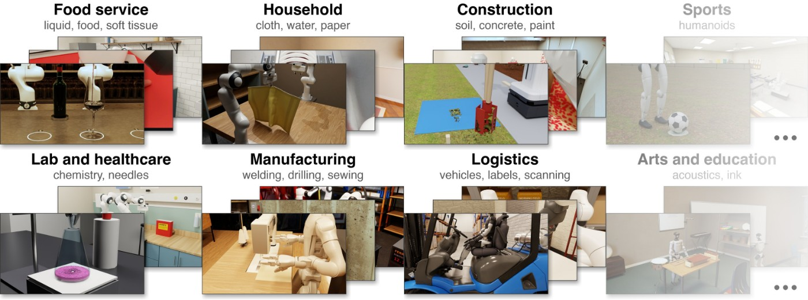
Aggarwal与Welleck的RoboWorld作者图：机器人仿真任务，不是实体机器人测试照片。 ↗ 原始图证Gym-Anything用编程代理制作机器人仿真；RoboWorld提供二十五个场景、二百个训练与测试环境。
开发者提供物理任务，代理搭场景、写动力学和评分器，再由其他代理检查物理错误、可完成性和奖励漏洞。
测试输入为任务说明、相机画面和机器人反馈，输出关节、末端或夹爪指令；三种受测模型在二十五项测试任务上均零完成。
这个结果受三小时预算、受限接口和指定任务约束；较容易的训练任务中，最好模型完成32%，并非全部机器人任务都失败。
产品判断
能读取仿真内部状态的教师能帮助学习，但论文没有验证训练结果迁移到真实机器人。
AI PRODUCT DAILY / 2026-11-01研究 · 作者实验 · 2026-10-30 · 近三日 / 边界见深读
EgoContact问模型该碰物体哪里，真人接触点帮助机器人挑抓取
 EgoContact作者原图：真人第一人称交互、接触标注与抓取示例。 ↗ 原始图证
EgoContact作者原图：真人第一人称交互、接触标注与抓取示例。 ↗ 原始图证EgoContact面向训练机器人视觉与操作模型的团队，用日常第一人称视频检验模型能否选对接触位置。
输入接触前的画面及拿起杯子等动作意图，输出按顺序排列的候选点，再与后续真人动作标注比较。
作者整理约2.25万条人工核验事件，分别衡量找到目标物体与落点精度，避免把大致认出物体当成会抓取。
换入这批接触记忆后，真实机械臂五种物体共五十次试验的成功抓取从八次增至二十九次；控制器仍用原方法。
产品判断
这是作者的小规模抓取测试；代码与数据页面仍写即将提供，不能当作已下载可复现的完整工具包。
AI PRODUCT DAILY / 2026-11-01研究 · 作者实验 · 2026-10-30 · 近三日 / 边界见深读
AskStream测试视频助手何时该追问，不能一直等或直接猜
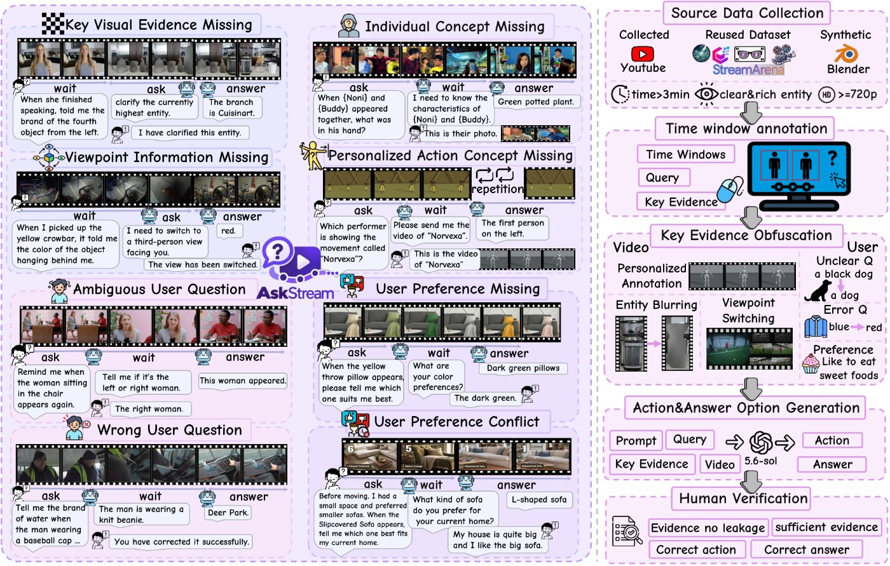
AskStream作者图3：视频与用户信息缺口的任务示例；研究示意，不是产品实测界面。 ↗ 原始图证AskStream供视频助手开发者测试模型能否发现信息缺口，适用于看不清物体、指代含糊或偏好过时等情形。
输入逐步到达的视频和用户问题，模型每秒选择等待、追问或回答；问对后才收到补充画面或澄清。
基准含438段视频、1401个问题；Ask-F1同时计提问与回答的内容和时机，过早追问也会扣分。
选择题条件下，受测离线模型最高52.18分，原生流式模型最高7.22分；这不是普通答题正确率。
产品判断
主实验每轮最多问一次，尚未覆盖没有用户提问时的主动发现，也未验证真实用户是否愿意被打断。它评估澄清策略，不直接执行现实任务。